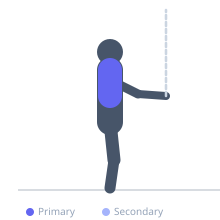
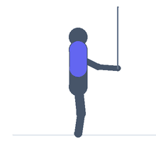

Exercise guide / Scapular Wall Slides with Resistance Band
Scapular Wall Slides with Resistance Band
Wall slides performed with a resistance band looped around both wrists, adding external rotation resistance throughout the upward slide. As the arms move overhead, the band pulls the wrists together (into internal rotation), and the exerciser must resist this by maintaining wrist separation and external rotation. This cue amplifies infraspinatus and teres minor activation during the slide while training the full overhead arc, making it an effective combination of shoulder external rotation and scapular upward rotation training.
Primary muscles
trapezius lower
infraspinatus
teres minor
Secondary muscles
trapezius middle
pectoralis minor
Equipment
Resistance Band (Loop / Mini Band)


Starting position
- Stand with the back against a flat wall. Loop a light resistance band around both wrists. Begin in the goal-post position with elbows at shoulder height and all contact points on the wall (back, head, elbows, forearms, hands).
Setup
- Use the lightest available band. The band should not prevent the wall contact from being maintained. Increase resistance only when full range is achievable with both arms maintaining wall contact.
Steps
- Step 1: Begin in the wall angel goal-post position with the band between the wrists.
- Step 2: Slide both arms upward along the wall, actively resisting the band by keeping the wrists apart (externally rotating at the shoulder against the band's inward pull).
- Step 3: Raise as high as wall contact allows while fighting the band.
- Step 4: Slide back down to the goal-post position. Repeat.
Coaching cues
- Fight the band — actively push your wrists apart as you slide up
- Maintain all four contact points on the wall throughout the slide
- The external rotation demand from the band should feel like work at the mid and upper range
Breathing
- Exhale as you slide up. Inhale as you return.
Range of motion
- Full overhead range that allows wall contact to be maintained throughout the arc.
Tempo
- 3s slide up, 2s hold, 3s slide down.
Common mistakes
- Letting the band win — allowing internal rotation as the arms go overhead defeats the purpose
- Using a band that is too heavy, preventing overhead range
- Losing wall contact with the forearms or lower back during the slide
Safety
- If shoulder pain increases with the external rotation demand, remove the band and return to unloaded wall slides
- Only add the band after mastering the bodyweight wall angel with full wall contact
Training
- mobility: 8–15 reps
- mobility: 2–3 sets
- Rest: {'mobility': 60}